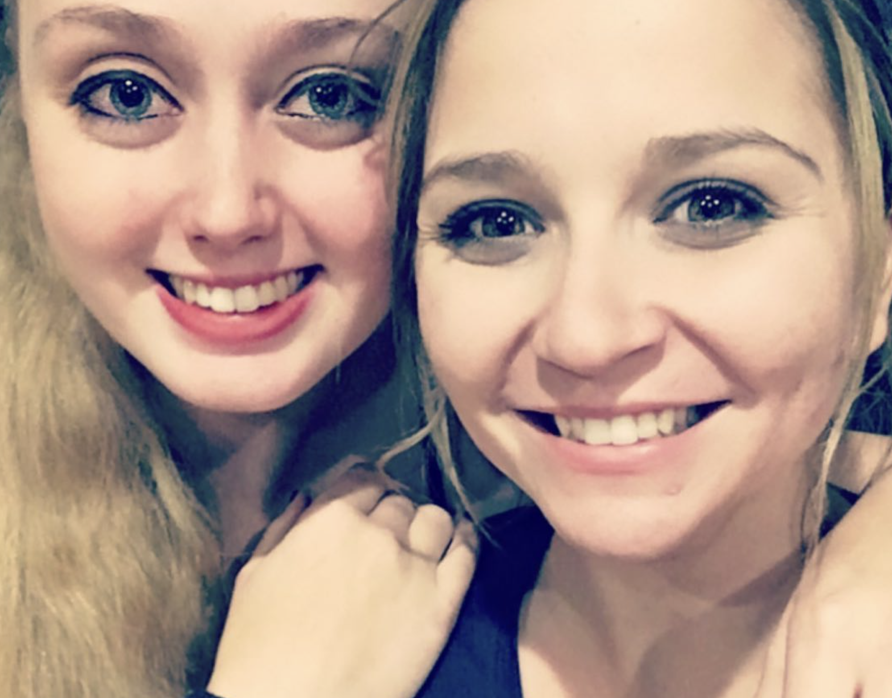
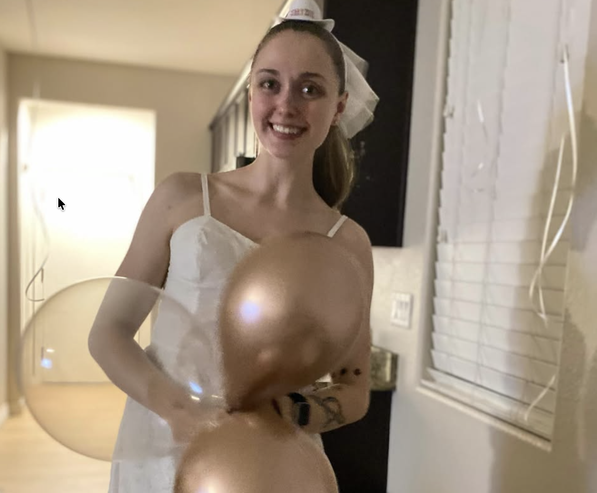
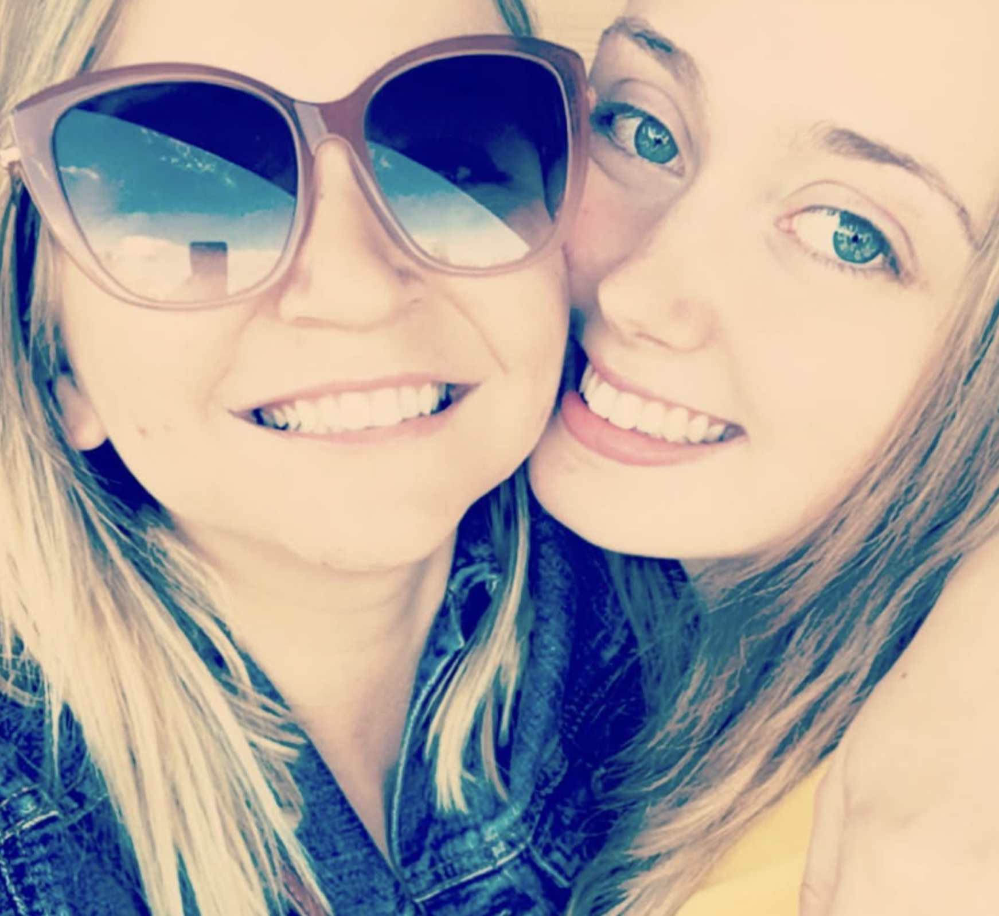

Form 7B. Fan edition. Please read before boarding.
Welcome aboard
the Tulpar.
A cargo freighter, five crew, a very long delivery run, and one very bad day. This is an unofficial, spoiler-aware guide to Mouthwashing, made for people who love the game and for people deciding whether to play it.
What is Mouthwashing?
Mouthwashing is a 2024 psychological horror game made by the studio Wrong Organ and published by Critical Reflex. It first came out on PC through Steam on September 26, 2024, and console versions have since been announced, so check your preferred store for the current platform list.
You follow five crew members of the freighter Tulpar, which strikes an asteroid partway through a year long delivery trip. The story is told out of order, jumping between the days before the crash and the long, grim aftermath, while the crew runs short on supplies and tries to work out who is responsible.
The look is deliberately lo-fi, inspired by early 3D console games, which makes the dread feel strangely intimate rather than flashy.
Before you play: content notes
Mouthwashing is a mature game with heavy themes. Please take this seriously, and it is completely fine to skip it.
- Suicide and self-harm themes
- Severe injury, burns, and body horror
- Violence and gore
- Alcohol misuse and workplace abuse
- Starvation and desperate survival choices
It carries a mature rating and is not for children. If you are going through a hard time yourself, it is worth playing when you feel steady, with someone you trust nearby, or skipping it altogether. If you are in the United States and need to talk to someone, call or text 988 at any time. Elsewhere, your local crisis line or emergency number can help.
Meet the crew
Spoiler-free introductions. Tap a card for a little more.
What the game is really about
Work that wears people down
The Tulpar is a place of low pay, long hours, and a company that is far away. Much of the horror comes from ordinary pressure, not monsters.
Who is responsible
The central question is not just what happened, but who is to blame and what a group of tired people owes each other afterwards.
Memory and perspective
The broken timeline means you are never sure you have the full picture, and each viewpoint reshapes the others.
Isolation
Stuck in a small ship with dwindling supplies, tiny irritations and kindnesses both carry enormous weight.
Tips for a first playthrough
- Play in one or two sittings. It is short, and the mood builds best when you do not break it up.
- Wear headphones. The sound design carries a lot of the unease.
- Look at everything. Small objects and background details add context. Take your time exploring.
- Avoid spoilers. The story lands hardest when you go in fresh. Skip video thumbnails and comment sections until you have finished.
- Talk about it after. It is a great game to discuss with a friend, and a second playthrough shows how much you missed.
Which Tulpar crew member are you?
Six questions, no spoilers.
Spoiler zone
Finished the game? Open this for a few non-detailed talking points to chew on. Even these hint at the story.
- The timeline is scrambled on purpose. How did your opinion of each character shift as you saw earlier events?
- Who did you trust at the start, and who do you trust now?
- What does the game say about the people who set up the conditions, versus the people who act inside them?
- Which small detail did you only notice on a second look?
For the one who plays the game



For a doctor who loves a good horror game, from Aunt Amanda. Take care of the crew, and take care of yourself.